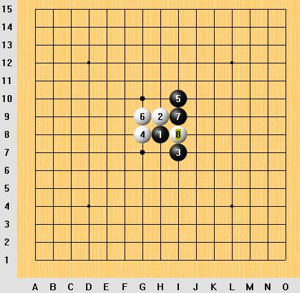

丘月开局必胜一问
首页
五子棋交流
#1 丘月开局必胜一问 作者：sheal 发表时间：2007-6-28 21:11:22
白4防守后,完全对称图形.黑5二打,一打通花月,三打通金星(有盘端)
白6唯一防,黑7也唯一,白8也唯一,然后黑9有两个选择G7,G10.请问哪个黑9能必胜,或者说哪个黑9好一些?

#2 Re:丘月开局必胜一问 作者：屏蔽 发表时间：2007-6-28 21:46:37
我懒，就提供个思路，具体有没有必胜，怎么必胜，自己去搞，我不负责。
#3 Re:丘月开局必胜一问 作者：sheal 发表时间：2007-6-29 18:22:49
10防J6用黑石算一下就出来了.呵呵
主要是10防F10
#4 Re:丘月开局必胜一问 作者：屏蔽 发表时间：2007-6-29 23:33:21
黑11做棋是从寒星的必胜一型想到的，再看看吧。
#5 Re:丘月开局必胜一问 作者：青蛙王子 发表时间：2007-6-30 8:32:40
兄弟,还得多学习定式啊,这属于"小儿科"的问题啊
#6 Re:丘月开局必胜一问 作者：sheal 发表时间：2007-6-30 14:32:58
有这么简单的话.我就不上来问了.
#7 Re:丘月开局必胜一问 作者：longfx 发表时间：2007-6-30 19:14:39
这个9吧.简单一点
#8 Re:丘月开局必胜一问 作者：屏蔽 发表时间：2007-6-30 20:50:23
诶，就考虑楼主的两个点了，呵呵，没想这个。
黑13常见必胜形咯～ 
白10反向防守的话黑连攻胜。
#9 Re:丘月开局必胜一问 作者：yuelee 发表时间：2007-7-2 13:16:06
 少少好厉害呀~~~~~~~~~
少少好厉害呀~~~~~~~~~